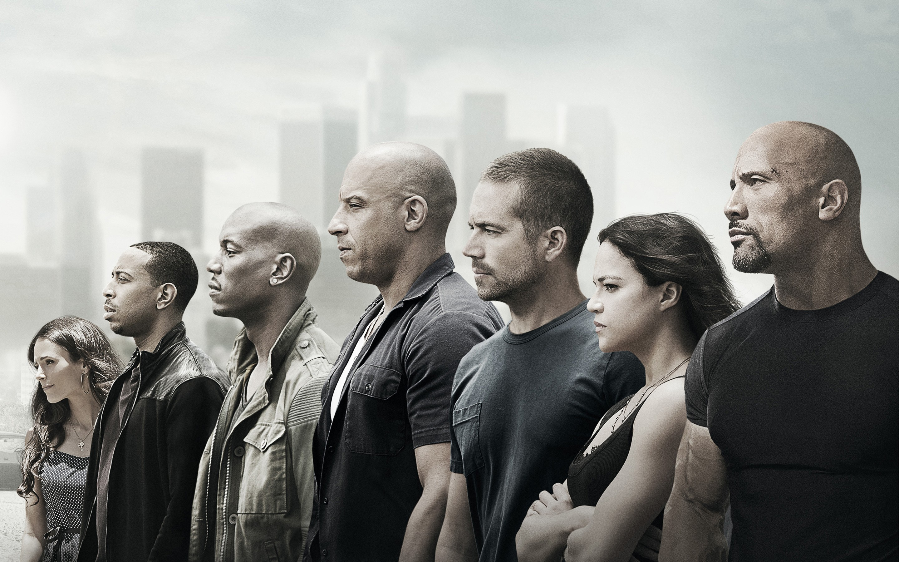
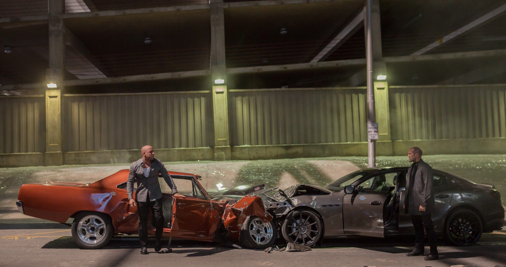
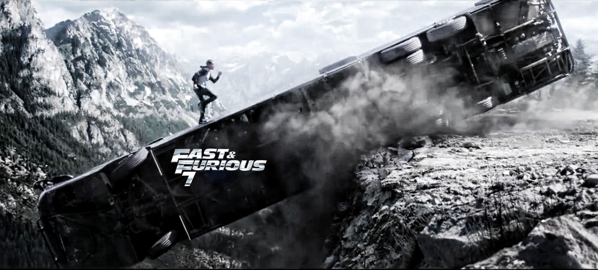

Furious 7 (titled onscreen as Fast & Furious 7) is a 2015 American action film directed by James Wan and written by Chris Morgan. A sequel to 2013's Fast & Furious 6, it is the seventh installment in the Fast & Furious franchise and stars Vin Diesel, Paul Walker, Dwayne Johnson, Michelle Rodriguez, Tyrese Gibson, Chris "Ludacris" Bridges, Jordana Brewster, Djimon Hounsou, Kurt Russell, and Jason Statham. Furious 7 follows Dominic Toretto (Diesel), Brian O'Conner (Walker), and the rest of their team, who have returned to the United States to live normal lives after securing amnesty for their past crimes in Fast & Furious 6, until Deckard Shaw (Statham), a rogue special forces assassin seeking to avenge his comatose younger brother Owen Shaw, puts the team in danger once again.
  